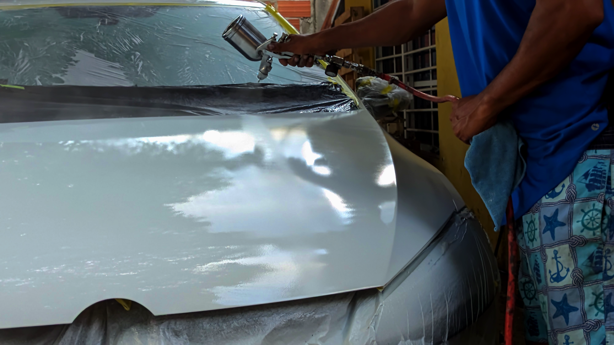
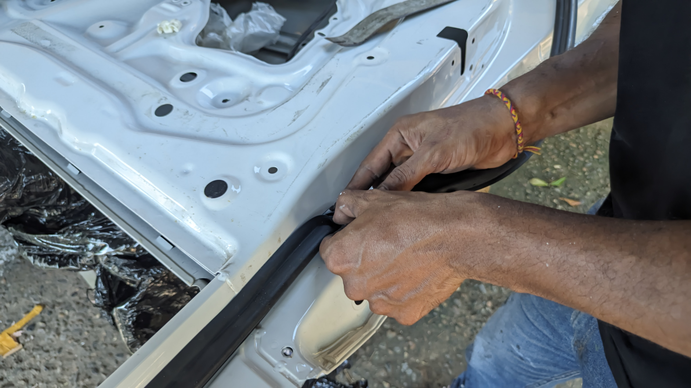

Pintura General
Cambia el color de todo tu vehículo o restaura el tono original con acabados brillantes y duraderos.

Latoneria
Reparación de golpes, abolladuras y daños en la carrocería, devolviendo a tu auto su forma y estilo originales.

Pintura de Piezas
¿Solo necesitas retocar una parte específica? Pintamos piezas individuales con precisión, logrando que cada detalle luzca perfecto.